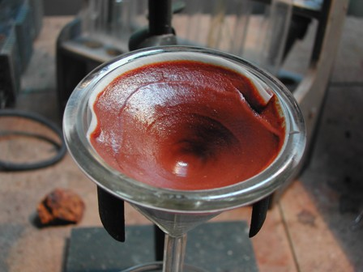

Qualche giorno fa, in una anomala giornata di fine ottobre quasi estiva, camminando lungo il sentierino che dall'abbazia di San Galgano conduce a Montesiepi mi è capitato casualmente di buttar l'occhio su un sasso che, avendo un po' di esperienza in queste cose, proprio un sasso-sasso non mi pareva.
San Galgano è il personaggio storico della spada nella roccia (quella vera, non la storiella di Re Artù), e Montesiepi è la bella chiesetta a cupola bicroma dove è piantata, appunto nella roccia la spada di quel tizio che abbandonò abbastanza platealmente il mondo materiale per entrare in quello spirituale.
Quando la grande abbazia cistercense fu costruita (siamo nel milleduecento) il cantiere divenne assai importante ed era supportato da opere di lavoro di ogni tipo, dalla fonderia per i vetri, da forni per la calce, oltre a tutto quanto concernente la scalpellineria e la lavorazione della pietra in generale.
Per quanto riguarda i metalli vi erano addirittura forni per la loro produzione, utilizzando minerali provenienti probabilmente dall'Isola d'Elba o dalle non lontane Colline Metallifere, nella zona di Massa Marittima.
Quel sasso di cui dicevo all'inizio si è rivelato alla prima occhiata (e alla prima presa in mano per saggiarne il peso specifico) un minerale ferroso, del quale non mi azzardo a dire se si tratti di un frammento di un antico minerale alloctono o se più semplicemente derivi da qualche vicina vena mineralizzata superficiale.

Trovandosi all'aria da chissà quanto tempo si mostra completamente limonitizzato, in una ganga a matrice probabilmente silicatica (non dà la minima effervescenza all'acido cloridrico).
Per pura curiosità ed in maniera assai semplice e senza alcuna presunzione di precisione, ho provato a controllare il contenuto in ferro di questo campione per avere un'idea del suo ordine di grandezza.
Ne ho prelevato un frammento del peso di 3,32 grammi da un punto che mi pareva significativo e l'ho trattato a caldo prolungatamente con miscela cloridrico-nitrica, fino a dissoluzione più completa possibile.
Ho ottenuto come previsto un residuo biancastro insolubile.
La soluzione limpida e gialla (FeCl3), filtrata e diluita fino a 200 ml, è stata trattata con ammoniaca fino a pH basico, ottemendo un copioso precipitato color ruggine di idrossido ferrico Fe(OH)3.
La sospensione è stata bollita per favorire la flocculazione del precipitato e poi filtrata e lavata.

Questo idrossido è finissimo e tende ad inglobare altri ioni, quindi è difficile ottenerlo sicuramente puro, tuttavia per la precisone che mi proponevo questa analisi quantitativa abbastanza grossolana può essere considerata del tutto sufficiente.
Il filtro è poi stato posto in forno a 150 gradi fino ad essicazione completa e pesato.
Si sono ottenuti 1,41 g di Fe(OH)3, che con qualche calcoletto stechiometrico forniscono una percentuale in ferro nel frammento di circa il 22%, che è un contenuto niente male per un mineralaccio del genere.
Posso prendermi la libertà e la fantasia di immaginare questo minerale come sorgente, o almeno come lontano o lontanissimo precursore di qualche manufatto metallico dell'antica abbazia?
L'abbazia di San Galgano cadde rapidamente in disgrazia (cominciò a rovinare già nel cinquecento) ed è stata definitivamente sconsacrata nel lontano 1789.
Rimane ora uno splendido e suggestivo monumento del gotico prerinascimentale, completamente spoglio e senza tetto, di grande suggestione nella bella campagna toscana tra il senese ed il grossetano.
Si potrebbe gustare ancor di più la sua visita, a parer mio, al tramonto di una brumosa giornata autunnale, quando la luce e l'atmosfera più contemplativa amplificherebbero il potere evocativo di passate glorie e grandezze, ridotte dal tempo a ruderi solenni.